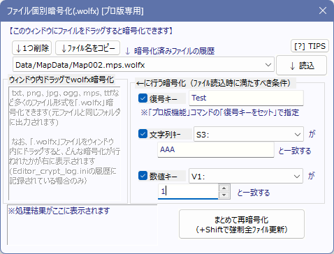

【[P]ファイル個別暗号化】 プロ版のみの個別ファイル暗号化機能
プロ版では、ファイル1つ1つに個別のキーを設定して暗号化することができます。
画像だけでなく、「フォント」や「マップファイル(.mps)」の暗号化も可能です。
これは「ゲームデータ作成」時の暗号化によるセキュリティには限界があることが分かったため、「ユーザーごとに異なる方法でファイル別暗号化をおこなえるようにする」ために搭載されたものです。
この機能でしっかりキー設定して作られた「.wolfx」暗号化ファイルは、「ゲームデータ作成」時の暗号化で作られたものに比べて、解析や解凍がはるかに困難になります。
（最低でも、コモンイベント内やマップファイル内を詳しく解析しないと、復号するためのキーが分からなくなります。さらにゲーム内で、キー文字列の作り方を分かりにくくしたり、オンライン経由でキーをダウンロードして使用後にすぐキーをリセットするようにすれば、ゲームデータ全体を解析しても復号キーを知ることは非常に難しくなります）

●ウィンドウ内にファイルをドラッグ&ドロップすると暗号化できます
暗号化やそれを読み込む手順は以下の通りです。
1．「復号キー」「文字列キー」「数値キー」の3つを設定する（何も設定しなくてもOK）
2．暗号化したいファイルを「エクスプローラー(Windows付属ツール)」などからこのウィンドウへドラッグ&ドロップする（マウスカーソルで引っ張ってウィンドウ内に入れる）ことで、「そのファイルと同じフォルダ」内に.wolfx暗号化されたファイルが出力されます（例えばChicken.pngを暗号化すると、同フォルダにChichen.png.wolfxが出力されます）。
3．[ゲーム内] ゲーム内で各キーを正しく設定すれば、個別暗号化された.wolfxファイルを読み込むことができます。
（個別暗号化したファイルがある場合、元ファイルを指定しても暗号化した方が優先して読み込まれます）
●「まとめて再暗号化」機能について
ゲームデータ内に作られているすべての.wolfxを探し、「更新日時」が元のファイルより古かった暗号化ファイル（=元ファイルの方が暗号化ファイル側より新しくなっているもの）を、「まとめて再暗号化」できます。
ただし、再暗号化できるのは「履歴に暗号化の記録が残っている」ものに限られます。通常、暗号化を行うと自動で履歴に残るため、ほとんどの場合は問題は起きないはずです。
●暗号化されたファイルの、ゲーム内での読み込み方
この暗号化を行ったファイルはゲーム中、
- 「(「プロ版機能」でセットできる)復号キー」、
- 「指定した文字列変数と、文字列キー」
- 「指定した数値変数と、数値キー」
の3つが、読み込みの瞬間に一致している場合だけ、ゲーム内から正常に読み込むことが可能になります。違う場合は緑帯のエラーが表示されます。
この3つのうちのいくつか、あるいは全てを使わないようにすることも可能です。
（全てを使わない場合、直接Windows上から読めないだけで、GamePro.exeからは何もキー設定しなくても読めるファイルになります。解析にはおそらく無力になります）
【.wolfxファイルがある場合、エディター内で元ファイルを指定しても、ゲーム中は優先的に.wolfx暗号化ファイルが読み込まれます】
ゲーム中に元ファイルが読み込まれようとしたとき、もしそのファイルの「.wolfx」版ファイルがあれば優先的に.wolfx暗号化ファイルの方が読み込まれます。
たとえば「CharaChip」フォルダ内に「Chicken.png」があり、それを個別ファイル暗号化して「Chicken.png.wolfx」ファイルを作ったとします。
この場合、ゲーム内で「CharaChip/Chicken.png」ファイルを読み込もうとすると、自動で「CharaChip/Chicken.png.wolfx」ファイルが読み込まれるのです。
つまり.wolfx暗号化ファイルが作られている場合はエディター側で「元ファイル」をファイル指定したままでも、ゲームのプレイ中には「自動で暗号化ファイルの方を読み込んでくれる」のです。元ファイルを入れたままでも、本番同様にテストプレイができるというわけです。
→ 逆に言うと、.wolfx暗号化ファイルが作られているファイルの場合、どうやってもゲーム中に元ファイルの方を読み込みさせることはできません。元ファイルを読ませたい場合は.wolfxファイルを削除してください。
【ゲームデータ作成時、.wolfxファイルが作られているときは元ファイルはゲームデータにコピーされません】
「CharaChip」フォルダ内に「Chicken.png」と、それを暗号化した「Chicken.png.wolfx」ファイルがあった場合、「ゲームデータ作成」を行うと、「Chicken.png.wolfx」のみコピーされ、元の「Chicken.png」はコピーされません。
よって、ゲームデータを作成する際に、いちいち元ファイルを消す必要はありません。
【ゲーム中にキーを設定して読み込ませます】
- ゲーム中、「プロ版機能」内の「.wolfx暗号化ファイルの復号キーをセット」コマンドを使うことで、「指定ファイル」に対して「復号キー」をセットできます。
- 「文字列変数/数値変数」のキーを設定していた場合は、ゲーム中の読み込み時にそれらも一致する必要があります。
たとえば文字列キーで「S1:シーン名」が「魔法使いとの出会い」の場合、とキー指定した場合、もしゲーム中にS1の内容が「旅立ち」（魔法使いとの出会い、ではない）だったりした場合は復号に失敗します。
→ これはたとえば、1枚絵ファイルが使われる 「シーン名」や「章番号」をキーとしてセットして暗号化画像を読ませたりすることを想定しています。
【セットした「復号キー」はセーブデータ内に保存されます】
ゲーム中にセットした「復号キー」はセーブデータ内に保存されます。
ファイルを守る目的ではおすすめしませんが、「ゲーム開始時」にファイルやフォルダ別の復号キーを一通りセットしておけば、以後、特に「復号キー」を意識せずにファイルを扱うことが可能になるでしょう。
（一方、もしファイルを強力に守りたい場合は、
「様々な場所で数文字ずつキーを追記して復号キーを作る（解析を難しくする）」
「復号キーをオンラインからダウンロードして使用後にすぐ消す（セーブデータに残さない）」
などすると解析が非常に難しくなるため、ファイルのセキュリティが向上します）
【暗号化可能なファイル形式】
- txt、png、ogg、mps（マップファイル）など、ゲーム中にイベントコマンド経由で読み込まれる多くのファイル形式を暗号化することができます。
なお、「.dat」ファイル、「.project」ファイルは暗号化できません。ゲーム基本設定(Game.dat)、コモンイベント、タイルセット設定、データベースファイルは暗号化できないということです。
- ttf/ttc/otf 形式の「フォントファイル」も暗号化できますが、キーは何も設定できません。
(フォントは「起動時に自動で読み込まれる」ため、ゲーム内から復号キー等が設定できないからです。フォントファイルは、「Game.exeと同じ場所」あるいは「Dataフォルダ内」に暗号化した「～.ttf.wolfx」フォントなどを置いておくと自動で読み込まれます)
【mps(マップ)ファイルに.wolfx暗号化ファイルが作られていた場合、マップ保存時に暗号化ファイルも自動保存されます】
マップファイルが保存された時、もしそのマップファイルの「.wolfx」版ファイルがあった場合は自動で再暗号化も行います。でないとテストプレイが大変になるためです。
(ただし個別ファイル暗号化の「履歴」内にそのマップファイルの暗号化情報がある場合のみ、再暗号化されます）
●セキュリティの高め方
この「個別ファイル暗号化」機能を使って高いセキュリティを発揮するには、以下の方法がおすすめです。
【暗号化時】
- 復号キーを長めにしておく。日本語20文字など。
【復号化時（ゲーム内の、コモンイベントやマップイベント内での処理）】
- 【基本的な注意】
・「プロ版機能」の「復号キーをセット」コマンドには直接、復号キーを書かない。
→ コマンド解析で一発でキーがバレてしまいます。最低でも、「\s[1]\v[4]」のように代入特殊文字を使って指定しましょう。
・基本的には、関連文字列をちりぢりにしておいて、『（コマンドだけを見ても分からず）実際にゲームを動かさないと完成された復号キーが分からない』仕組みにすればするほどセキュリティが高くなります。
- 【復号キーの作り方1 数文字ずつ足したり消したりする】
「文字列操作」で数文字ずつ足したり消したりして復号キーを作る。
→ さらにその処理をちりぢりのマップイベントに入れ、「順路にしたがって1文字ずつ追加されていく」ようにすると解析は非常に困難になります。
通常、マップ上のプレイヤーの移動経路まで把握することは自動解析処理では困難だからです。
- 【復号キーの作り方2 一見ランダムな順番で作る】
マップイベントにちりぢりに配置するのが面倒な場合、コモンイベント内で以下のように
1. Sys110で固定のシード値をセットしてから
2. ランダムな順番で文字を作ったり消したりする処理を作る
という方法で解析を困難にすることができます。
「シード値を固定の値」にすると、その直後からのランダム値は実は「同じ数値列」が出てくるので、この仕組みを利用すれば「必ず同じ文字列を作ることができる」のです。
以下のコマンド例では、シードを「7」にセットした後の「変数操作: CSelf0 = 0 ～ 3 」は「1」「3」「0」「1」「1」の順に値を返すので、「あいい（最初あったはずの「い(1)」は「1文字削除(3)」で相殺）」という文字列が生成されます。
■変数操作: Sys110:現在の乱数のシード(種) = 7 + 0
■文字列操作：CSelf5 = ""
■回数付きループ [ 5 ]回
|■変数操作: CSelf0 = 0 ～ 3
|■条件分岐(数値): 【1】 CSelf0 が 0 と同じ 【2】 CSelf0 が 1 と同じ 【3】 CSelf0 が 2 と同じ 【4】 CSelf0 が 3 と同じ
|-◇分岐： 【1】 [ CSelf0 が 0 と同じ ]の場合↓
| |■文字列操作：CSelf5 += "あ"
| |■
|-◇分岐： 【2】 [ CSelf0 が 1 と同じ ]の場合↓
| |■文字列操作：CSelf5 += "い"
| |■
|-◇分岐： 【3】 [ CSelf0 が 2 と同じ ]の場合↓
| |■文字列操作：CSelf5 += "う"
| |■
|-◇分岐： 【4】 [ CSelf0 が 3 と同じ ]の場合↓
| |■文字列操作：CSelf6 =<最後1文字切出(→文ｶｯﾄ)>CSelf5
| |■
|◇分岐終了◇
|■
◇ループここまで◇◇
▼ この時点で\cself[5]には「あいい」という文字列が格納されている
■[Pro] .wolfx暗号化ﾌｧｲﾙの復号ｷｰをｾｯﾄ [Data/Animal_Chicken.png] => [\cself[5]]
- 【復号キーの作り方3 オンラインからダウンロードする】
復号キーのtxtファイルをレンタルサーバーなどに置いておいて、ゲーム中に『ダウンロード』処理で文字列として取得して復号キーにすることで、『配布されているゲームデータを解析するだけでは復号キーが分からない』という状態にできます。
その場合、URLも何回かの文字列操作で「文字列を組み合わせて作る」のがより効果的です。
以上の方法はあくまで一例です。
ここに書いてある時点ですでに自動解析処理として対応されている可能性がありますので、みなさまそれぞれに独創的なセキュリティを作ったり、アレンジしてご利用いただくと、ファイルをより強固に守ることができるでしょう。